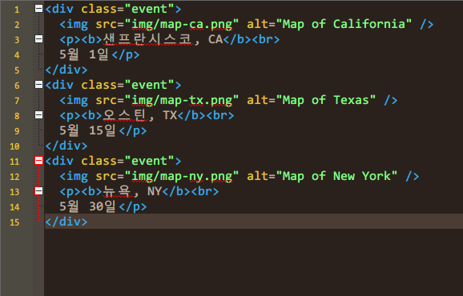
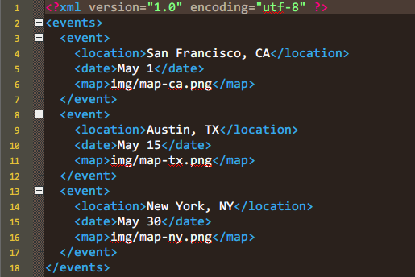
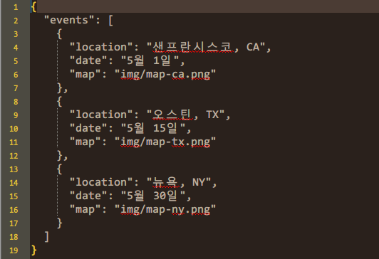

Data Type

HTML
장점
- 코드의 작성 및 요청을 처리하고 응답을 표시하기가 간편하다
- 서버로부터 전달된 데이터를 곧바로 페이지에 삽입할 수 있다. 따라서 브라우저가 별로도 처리할 필요가 없다
단점
- 서버가 반드시 페이지에서 사용할 수 있는 HTML을 리턴해야 한다
- 웹 브라우저가 아닌 애플리케이션에는 적합하지 않다 (데이터 이식성이 좋지 않다)
- 요청이 반드시 같은 도메인으로부터 이루어져야 한다.

XML
장점
- 유연한 데이터 타입으로 복잡한 구조의 데이터도 표현이 가능하다
- 이기종 및 응용 프로그램 사이의 데이터 교환에 적합하다
- HTML과 동일한 DOM 메서드들을 통해 처리가 가능하다
단점
- 태그 때문에 데이터 외에도 추가로 많은 문자들이 사용되어서 실제로 필요한 데이터보다 더 많은 대역폭을 소비한다
- 요청이 반드시 페이지와 같은 도메인에서 이루어져야 한다
- 결과를 처리하기 위해 많은 양의 코드를 작성해야 한다

JSON
장점
- 다른 도메인에서도 요청을 보낼 수 있다.
- HTML/XML보다는 간결하다
단점
- 문법에 예민하다. 따옴표, 콤마, 콜론 등을 실수하면 파일 전체를 처리하지 못하게 된다.
- 자바스크립트이기 때문에 악의적인 콘텐츠를 가질 가능성이 있다. 따라서 신뢰할 수 있는 곳에서 생성된 JSON만을 사용해야 한다